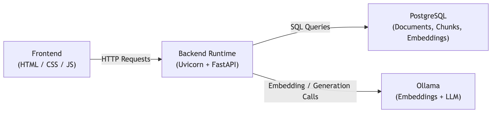

Mini RAG Agent
What This Project Is
- Full Retrieval-Augmented Generation (RAG) system
- Upload text documents and ask questions
- Answers are generated strictly from uploaded documents
- Not an API wrapper
- Not a prompt-only demo
- Complete system with ingestion, storage, embedding, retrieval, and generation
- Designed to expose real-world edge cases
- Goal: understand modern AI systems end to end
- Focus on LLM + vector search + database interaction
- Explicit handling of bugs tutorials usually hide
System Overview (Mental Model)
- Documents enter the system (ingestion)
- Documents are broken into chunks (processing)
- Chunks are converted into vectors (embedding)
- Questions are converted into vectors (query embedding)
- Similar chunks are retrieved (retrieval)
- LLM answers using only retrieved chunks (generation)
- Each stage is explicit
- Each stage is isolated
- Failures can be traced to exact layers

Tech Stack (With Reasons)
- Backend Language: Python 3.11
- Strong AI ecosystem
- Mature async support
- Fast iteration over raw performance
- Web Framework: FastAPI
- Strict request/response validation
- Automatic OpenAPI documentation
- Async-first design
- Clean dependency injection for DB handling
- ORM: SQLAlchemy
- Full control over schema and constraints
- Safe schema evolution
- Ability to drop to raw SQL
- Database: PostgreSQL
- No SQLite used
- Production-like behavior
- Real constraint, sequence, and transaction handling
- Embeddings: Ollama + nomic-embed-text
- Local inference
- No cloud APIs
- Stable, high-quality embeddings
- Easy model swapping
- LLM for Generation: Ollama (gemma2:2)
- Fully local inference
- No rate limits or API keys
- No hidden latency or billing concerns
- Model changes are configuration-only
- Frontend: HTML, CSS, Vanilla JavaScript
- No React or frameworks
- State bugs are visible
- Focus on system behavior, not visuals
- Server: Uvicorn
- ASGI server for FastAPI
- Simple and performant
- Version Control: Git + GitHub
- Versioned from day one
- Easy rollback and debugging
Phase 1: Document Ingestion
- TXT files only
- No PDFs, DOCs, or parsing libraries
- Raw file bytes read
- Explicit UTF-8 decoding
- Immediate failure on decode errors
- SHA-256 hash computed from content
- Prevents duplicate document pollution
- Deduplication based on content hash
- Hard UTF-8 validation with HTTP 400 errors
- Ingestion is deterministic and predictable
Phase 2: Database Design
- documents table
- chunks table
- documents: id, filename, checksum, source_type, uploaded_by, created_at
- chunks: id, document_id, chunk_index, content, embedding, metadata
- Chunk-level retrieval
- Exact traceability from answer to chunk
- uploaded_by made nullable
- Dedicated reset endpoint
- Correct PostgreSQL sequence resets
Phase 3: Chunking Strategy
- Fixed-size chunks (~800 characters)
- Sequential slicing
- No overlap
- Simple by design
- Chunk boundaries may split ideas
- Accepted intentionally
- Future: sliding windows, sentence-aware, token-based chunking
Phase 4: Embedding Pipeline
- Chunk text sent to embedding model
- Vector received and stored
- Fully async pipeline
- Strict length checks
- Hard failure on mismatches
Phase 5: Retrieval Logic
- User question embedded
- Similarity computed against chunk embeddings
- Explicit filtering by document IDs
- Top-k chunks returned
- Prevents cross-document leakage
- Forces frontend/backend state agreement
- Similarity scores debugged directly
Phase 6: Generation Layer
- Explicit instruction to use only provided context
- Explicit instruction to say “I don’t know”
- Prevents hallucination
- Grounded, traceable answers
Phase 7: Frontend & State Management
- Upload up to 3 TXT files
- Persistent document ID tracking
- Continuous logs
- Explicit reset button
- Document state never hidden
- Logs appended, not overwritten
- Most bugs were frontend state bugs
Known Limitations
- TXT files only
- No conversation memory
- Simple chunking
- No authentication
- No ranking metrics UI
What This Project Shows
- Layered system design
- Explicit state handling
- Failure-driven debugging
- Preference for clarity over abstraction
- Deep understanding of RAG systems